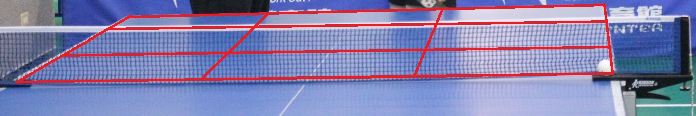
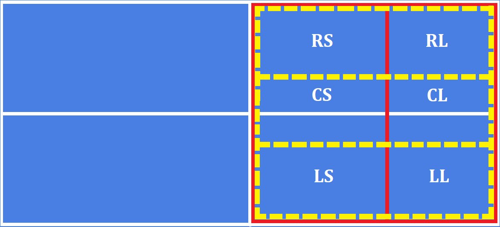
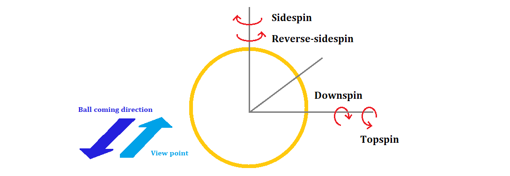
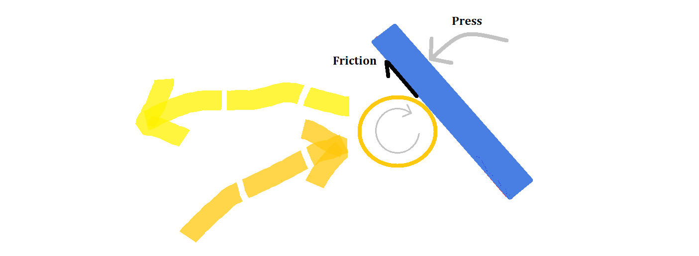
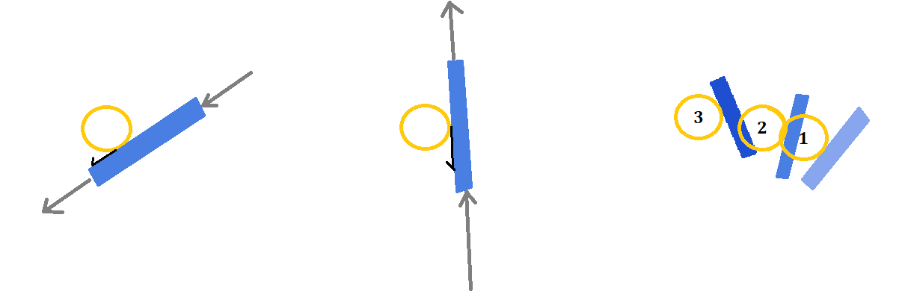
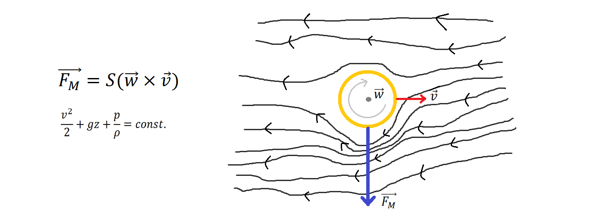

Tabletennis is a complex sport. Players have to hit the ball back to the other side by wood rackets sticked with various types of rubbers. This paper provides general knowledge and experience about the sport.
BASIC KNOWLEDGE
a. Position. The position of table tennis can be roughly classified into 6 or 9 regions, which are the composition of [Left, Center, Right] x [Short, (Middle), Long]. In the following chapter, the position will be used in acronyms likes LS(left-long), CS(center-short) and so on.

• The regions on the table(9 positions)

• The regions on the table(6 positions)
b. Rotation. The rotation of table tennis is composed by sidespin(sidespin and reverse sidespin) and downspin(topspin and downspin). In the following content, the rotation of balls will be described as ST(sidespin and topspin), SD(sidespin and downspin), RT(reverse sidespin and topspin), RD(reverse sidespin and downspin).

• Classification of rotation
In physics, there are three axis of rotation. The rotation around y axis would not have any effect when rubber touches ball.
c. Speed. The speed of ball is usually related to the position. A short ball would be slow and a long ball would be fast. But of course there are many exceptions.
RECEIVING
a. Standing Position. Most right-handed people would stand between the center to the L.H.S(left hand side), because it is hard to use backhand without body being right behind the position of the ball. Let the region in your L.H.S. be the size that you can cover. Another reason to stand in the L.H.S. is that it will make you jump left and use forehand easier. Forehand power is bigger than backhand in most of situation
b. Movement. Your body should be in the condition which can be activated in an instance. When your opponent is about the serve, you can jump a little bit to get into the condition.
c. Implementation and Method. There are numerous ways to receive serving. Following are the general principals to each type of serving, you must confront serving which is composed of the following situations:
(a) Top spin(上旋): Rotate the top of your racket forward (it will be named as “press” in the following content) and use proper force to send the ball back. Most top spin serves are powerful, if you add more power without pressing your racket down, the ball will fly out. A safer way is press your racket and send the ball back by the force of the ball gently.

• Dealing with topspin
Respect to rubber, the ball tend to go downward at the contact point, which causes a reaction force by Newton's third law. The ball tends to go upward, thus the racket should be pressed down to prevent the ball from flying too high or too far.
(b) Down spin(下旋): You should read the rotation quality of the down spin in a serve. If it is high, your racket should be flatter; if the down spin is low, your racket also should be more standing but also in a cutting-form. There are many ways to cut the ball back, you can make it heavy and long to let your opponent hard to pull; you can make it short to wait for another change to attack; you can slide the ball to left boarder or right boarder. Pulling and flip are two ways to change the ball into top spin. Pulling is only for a long serve and can be classified into “loop” and “speedo”(Japanese colloquial in Taiwan). Loop means pulling the ball in vertical direction, which will make it higher and having more top spin; Speedo means pulling the ball forward. In fact it is also a combination of up and front direction, but when being compared to loop, it is like forward. Speedo is faster and more powerful, but it needs a good position and preparation, which means your response and footwork should be good enough. Flipping is a technique to deal with short serve. You can see backhand flip in the following video. The player moves his body into the table, lower his wrist, then pull the ball up fast by forearm and wrist. The body should be in a proper position; otherwise the returning ball would be terrible. Forehand flip is pretty tricky, like backhand, you should get close to the ball, then pull the ball forward.

• Cut, pull, and forehand flip
Cutting is sliding rackets through the bottom region of the ball. Rubber will rub the ball and create an inverse rotation. If the ball is more spinning, you should cut the ball at lower part. Pulling is from down to up to overcome the down spin and produce a strong topspin; Forehand flip combines pulling and lifting.
• Backhand flip
Lin Yun Ju is good at backhand flip. The first ball serve of Shusuke is short and downspin to the forehand side. Lin moved to the side, spared place for his later backhand movement by lowering his wrist and racket. Then pulled the ball with a relative small movement hard.
(c) Side spin(側旋): Here we assume the opponent is right-handed. A side spin would be served by your opponent from your left to right, and the ball will tend to go to you right side. Thus you should make your return more left to keep it in the table. A reverse side spin will be served from your right to left, and the ball tends to go to your left side. Thus return the ball more right than usual.

• Sidespin and reversed sidespin
In the view point of player, sidespin will be served from left to right, no matter the opponent uses forehand or back hand or any method. Due to the rotation, sidespin tends to moves to R.H.S.. Should place the ball lefter to prevent from outside. Reversed sidespin vice versa.
(d) Heavy rotation(重旋轉): You can also call it a high rotation serve. Due to Magnus effect, the trajectory of a heavy spinning ball will “shift”. Side spin will shift to your L.H.S. than a normal side spin serving; reverse side spin to the right; down spin will fly longer and the trajectory is pretty flat; heavy top spin will accelerate in a short time before and after it contacts with table. When receive a heavy rotation serve, remember to contact the ball in another basis of spin. Like if it is a heavy side spin, don’t contact the ball in a side spin way, otherwise the heavy spin will let you hard to control the ball. Contacting this serve in top/down spin direction will be better.

• Magnus effect (top) and Bernoulli equation (bottom)
Magnus effect explains the force of a rotational body immersed in fluid. As the figure, the ball rotates in clockwise direction, whose angular velocity vector w would point inward to the screen. The ball moves to the right and its velocity vector is v. The lines beside the ball are the streamline of the fluid(air etc.). The force of Magnus effect Fm is the product of S and the outer product of angular velocity vector and the velocity of immersed object, where S is the avrage fluid resistant coefficient. The force points downward in this case by right-hand rule. Many place would declaim Bernoulli effect is the reason of the curving trajectory. However, when we look into the derivative of Bernoulli equation, it is based on energy conservation of the fluid particles on one streamline. In this case, the fluid flows through bottom and top of the ball are not on a same streamline but two close streamline. As a result, Bernoulli equation may not be appropriate to be used to explain this phenomena.
a. Standing Position. You would like to stand at the receiving position after serving as soon as possible. As a result, you can find most players serving at the L.H.S. of the table. It is in general case, you can stand every place you want. Sometimes standing at a unusual position can make you opponent nervous, because he or she doesn’t know what you are going to do.
b. Parameters of Serving. Spin, position, speed.
c. Method.
(a) Forehand(正手): You can serve all type of spin with forehand.
(b) Backhand(反手): Dimitrij Ovtcharov(Germany) uses this serve a lot. It is easier to fool your opponent by backhand serve.
(c) Underhand serve(下蹲): Dimitrij Ovtcharov(Germany) and Matsudaira Kenta(Japan) use this serve. It is in fact a kind of reverse side spin serving.
(d) Hook serve(勾手): Hook serve is in fact just a way to serve reverse side spin.
• Backhand serve from Ovtcharov (0:10)
• Underhand serve from Matsudaira Kenta
• Hook serve from Xu Xin (0:55)
d. Factors of Serving Movement.
(a) Holding(握拍): Hold the racket with only your thumb and index finger. Like making a gun posture then put the racket between these two fingers and holds it. The other three fingers should not influence the moving of wrist. The reason to hold racket in this way when serving is because hold the racket as usual confine the range of moving, which will decrease the quality of serving. Most of time your hand should be relax, it will only accelerate at the moment it is about to hit the ball.
(b) Toss high(拋球高度): Tossing ball high will store more energy for the serve, but it also makes you harder to control the ball. An expert of high-toos serving is He ZhiWen(Spanish). You can see his serve will shift at the end.
• High toss serve from He ZhiWen
(c) Shading(遮擋): It means using your body to shade your serving. It is illegal to shade the ball and racket at the moment they contact. But if you can reach the limit of the rule, shading you racket until it hits the ball, your opponent will be confused because it is too fast, then you will have a high possibility to attack in his or her returning. It may not be a good technique to learn.
• Shading serves
Jan Ove Waldner is a legend player. In his time shading was not illegal. You can see that he used his left hand to shade the ball until the racket touch the ball. ITTF Handbook 2022 states the service rules in 2.6.5: "As soon as the ball has been projected, the server's free arm and hand shall be removed from the space between the ball and the net. The space between the ball and the net is defined by the ball, the net and its indefinite upward extension."
(d) First position(第一落點): By physics, if you want to serve long, the first position should be close to the end of your table. If you want to serve short, the first position can be close to the end or to the net. Close to the net case will be easier to learn, but it is also easier for your opponent to know the serving is going to be short.
DEFENSE
a. Normal. Just return the ball back safely. The difficulties of defense is to know where the ball will go, and the quality of the attack.
• Defense of Oh Sang Eun
b. Chopper. I don’t know much about the skills of chopper, please google Joo Sae-Hyuk(Korea), Patagiotis Gionis(Greek), Ruwen Filus(Germany) .
• ZEN NOH 2014 WTTTC Highlights: Joo Se Hyuk Vs Chuang Chih Yuan
ATTACK
Following are some general skills people would use to attack.
a. Downspin. Loop, speedo, flip, various cut.
b. Topspin. Hit, loop.
c. Reference. The game of two aggressive attack player, Zhang Jike(China) and Jang Woo Jin(Korea).
• Zhang Jike vs JangWoojin | Best Camera Angle
DOUBLE
a. Reference.
• An J./Lim J. vs Huang Y.C./Liao C.T. | MD QF | WTT Star Contender Ljubljana 2023
b. Rotating. You can rotate in a 8 way, or leave to the right(left) side of table if you return the last ball in R.H.S.(L.H.S). But in fact you can run in any way if it works.
c. Mind Set. Rotating weakens most players. Thus sometimes you can win the game without attack but with stable return.
EQUIPMENT
a. Rubber
(a) Pips-in/Smooth: Most people used. The previous content is all based on pips-in rubber assumption.
(b) Short Pips: This rubber will decrease the rotation. So when you play topspin with short pimp, the ball may fall down like a weak downspin; when playing downspin, the rotation will decrease, if you don’t pull it up and change the angle of cutting, the ball will get high then being attacked by the short pimp. A general method to deal with short pimp is serving downspin, the ball coming back from short pimp would be weak downspin, then it is your opportunity to attack.
(c) Middle Pips: Influence more than short pimp.
(d) Long Pips: Top spin would become down spin, and vice versa.
(e) NT/Anti Spin: Minimize opponent's spin. For chopping.
(f) Pimp with/without Sponge: Pimp without sponge is more weird than with sponge.
There are various of rackets, five layers, seven layers, ALC, ZLC and so on. And within each item, there are different combination of woods and fiber. Also the position and order of the material would influence the performance of rackets. Some ambiguous instructions are that number of layer is propotioanl to the power, ALC is good to play in a control style, ZLC would produce more power but relatively hard to control. There is a website doing performance investigation about rackets and rubber with a scientific method, for more information please refer to tt gear lab.
c. Others
(a) Ball: Balls created by different companies have different property, though all of them are qualified. Following are my feeling of the balls used in competitions(2023 August): Donic is thick and large, its surface is rougher; Nittaku is smaller and solid, you can fell your power can send directly to the ball. But the surface is smoother; DHS(紅雙喜) is average; Butterfly is large and soft, the power can't be sent to the ball as the other ball, and you mat feel the ball "float" before it reach the table of opponent side.
(b) Table: Different table has different bounce height of balls. Make sure you have the ability to fell the difference and adjust your movement to it as soon as possible.